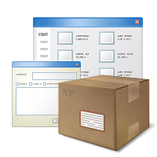
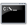

NuGet
Was ist NuGet?
Abhängigkeiten, Versionierung, Bereitstellen
. Ruby Gems
.
. APT iPKG CPAN...
Alternative: OpenWrap
>> nuget.exe
Pakete installieren

.  nuget.exe list
. nuget.exe install
. Install-Package
. The VisualStudio way
. for geeks: download it, unzip it
>> NuSpec
Pakete erstellen
. nuget.exe spec
. </> Metadaten
. Konventionen
. NuGet Package Explorer
. PowerShell
>> SemVer
Semantic Versioning
A.B.C(-pre) | | | | | | | +------ (optional) Suffix | | +---------- Bugfix | +------------ Minor +-------------- Majorsemver.org, versioning @nuget.org,
David Ebbos Blog Serie
Breaking changes in NuGet 1.7?
>> NuPack

Chocolatey
Paketverwaltung für Anwendungen
chocolatey.org
. It is kind of like apt-get, but for Windows
. Silently install apps, tools or set up things
. Update nearly everything .. with few keystrokes
>> Tuna